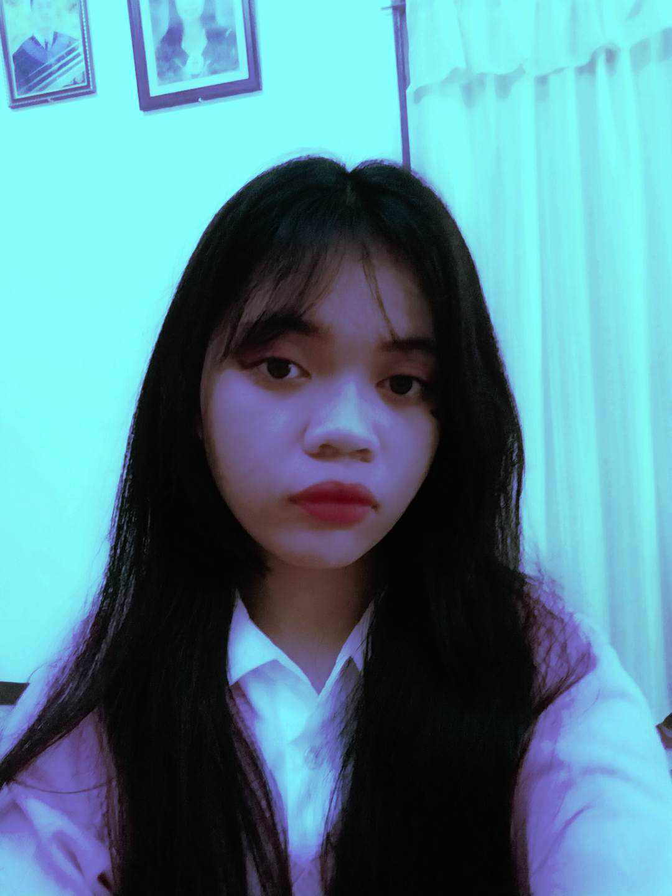
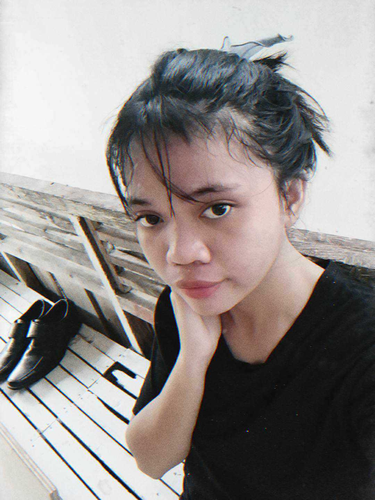

Here you can find information about myself,picture and boigraphy

Myself
Hi my name is Sunshine I'm Creative and adaptable, I’m always eager to learn and connect with others. I thrive in challenging environments, bringing enthusiasm and dedication to everything I do."
Mylifestory
My Childhood Pic

My Teenage Pic
My Adulthood Pic
Hobbies
Indoor
Watching Movies is a great way to relax and experience different worlds, stories, and emotions. It’s a fun escape that can also inspire creativity and offer new perspectives
Outdoor
Photography is the art of capturing moments and stories through images. It allows you to preserve memories, express creativity, and see the world from unique perspectives
Favorites
Food
Pizza is a favorite because it’s versatile, with a tasty combination of crispy crust, melted cheese, and various toppings. It’s also easy to share, making it perfect for any occasion
Artist
Ashtine Olviga
is a favorite artist because of their unique style and ability to connect with listeners through deeply personal and emotional music. Their work blends innovative sounds with relatable lyrics, resonating with many people on different levels. Ashtine’s creativity and authenticity make their art stand out, capturing the attention and admiration of fans worldwide.
Color
Blue It’s calming and soothing, often associated with the sky and ocean, which evoke feelings of peace and tranquility. Plus, blue can be both vibrant and subtle, making it versatile and easy to incorporate into anything from fashion to artwork. What about you—do you have a favorite color?